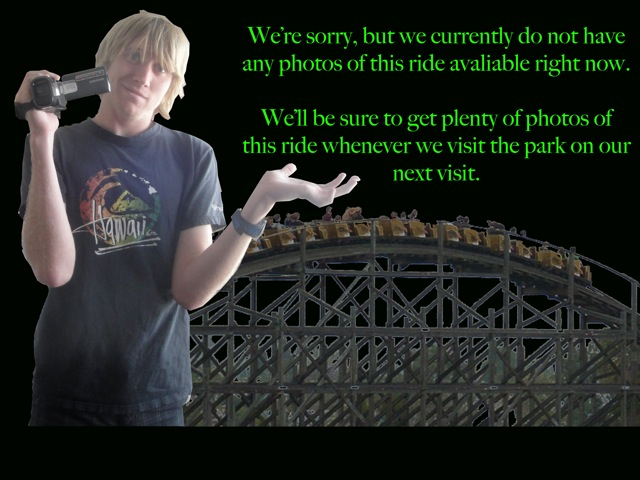

| |
Runaway Mountain Review

We're here at Six Flags Over Texas. Today's coaster is actually inside. So if its raining during your visit at Six Flags Over Texas, you still have something to ride. And considering how Six Flags Over Texas closes stuff for weather when it's nice and sunny outside because the weather is bad 30 miles away, yeah. That's a real threat to your visit (Stupid Six Flags Over Texas). So we get in the cars, pull down the lap bars, and we're off. We head around a turn, which is semi-outside before heading back fully inside to climb the lifthill. We go down a first drop and then through a bunch of turns. So it's kind of like Space Mountain, only without cool music and more laterals. Still prefer Space Mountain. But yeah. Skull Mountain is still a fun ride. Sorry I can't talk about it more since I'm not familiar with its layout other than the fact that it has a bunch of turns. Oh, and one thing. You know those Windstorms? It has a spiral drop similar to those. So the layout is similar, though it is apparently a custom layout. Either way, that drop is the highlight of the ride. Oh well. It's still a fun ride that I'd give a ride while you're at Six Flags Over Texas (if you have the Gold Flashpass).
6/10
Location: Six Flags Over Texas
Opened: 1996
Built by: Premier
Last Ridden: July 18, 2013
Home
|